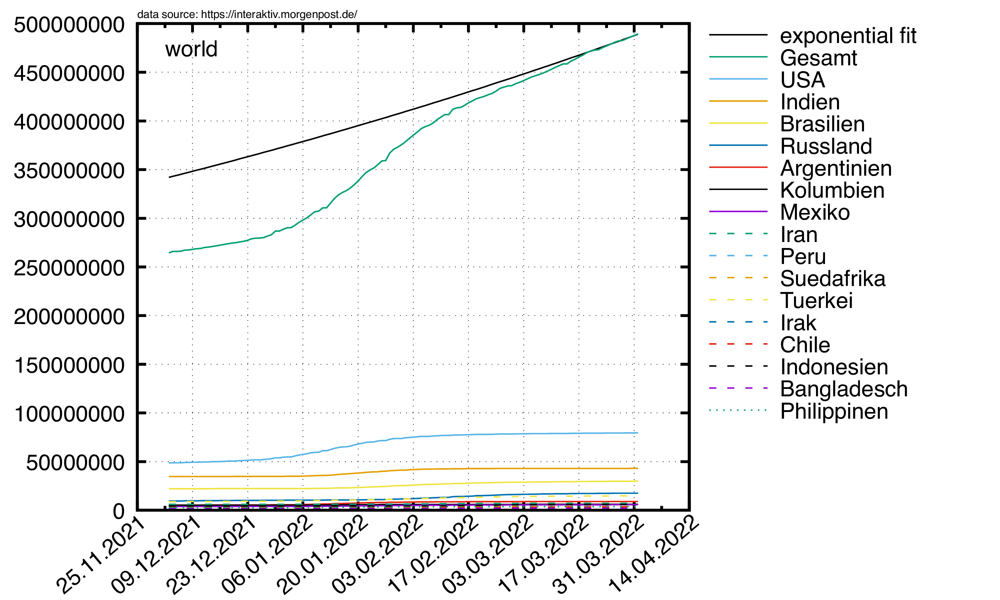
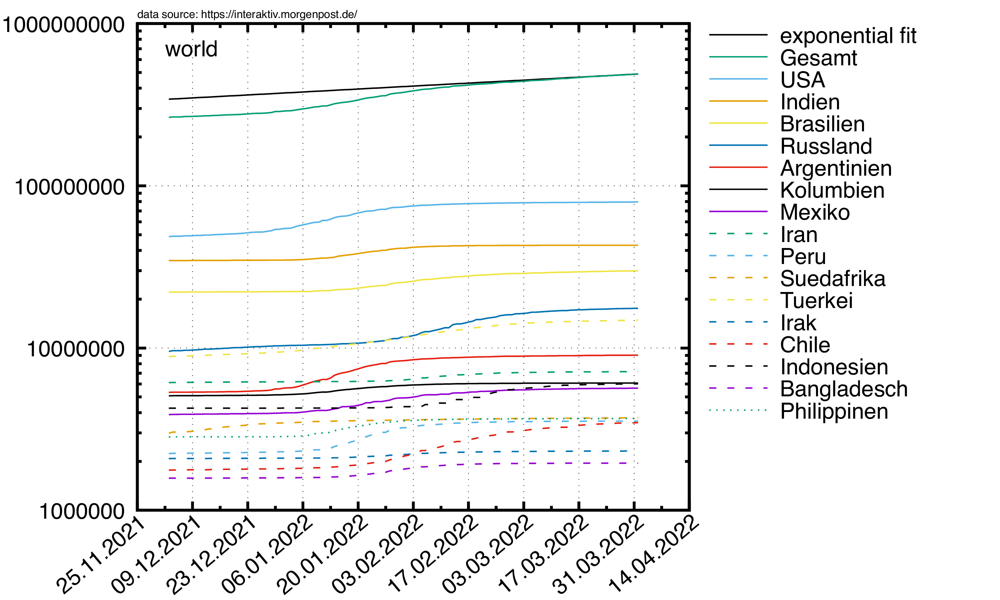
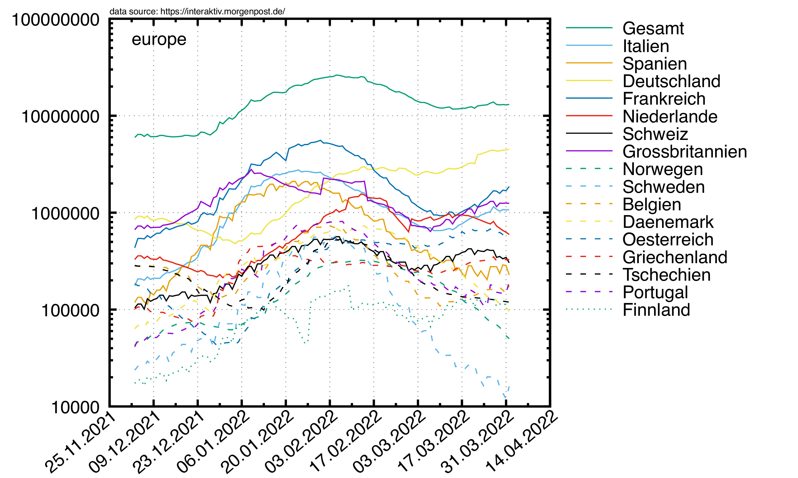
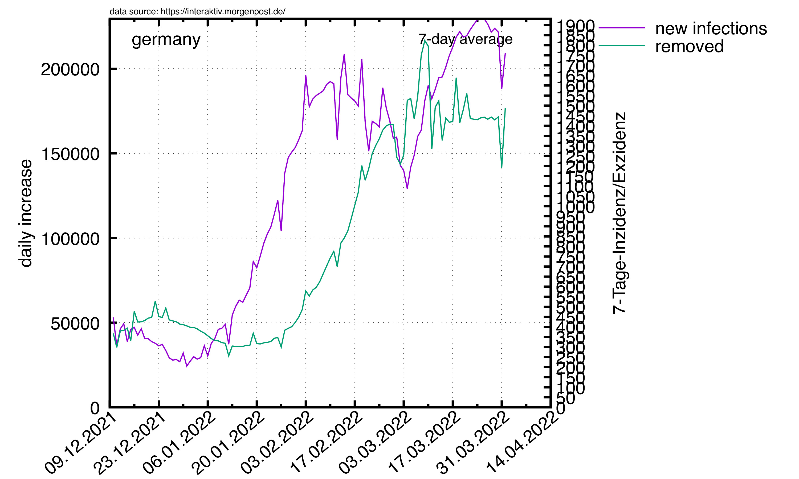
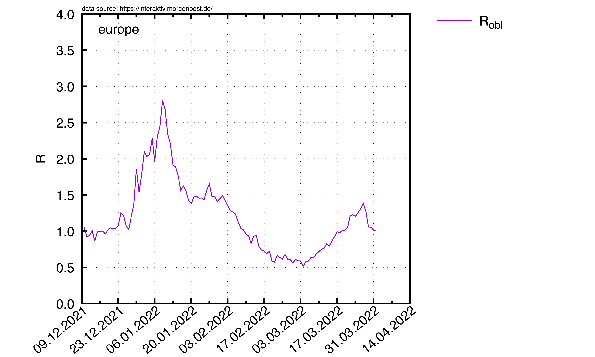

Studien zum Corona-Virus
© 2020 by R. Harlander
based on data taken from this URL
|
In einer Welt, in der eine e-Funktion Erstaunen auslöst,
ist
Statistik ein Fremdwort.
J. Schnelzer, 2020
|
Stand: 07. Mai 2020
 Der Plot zeigt die Gesamtzahl der am Corona-Virus erkrankten Menschen
in Deutschland auf einer logarithmischen Skala,
sowie diese Zahl nach Bundesländern aufgespalten.
Zusätzlich ist ein exponentieller Fit an die Gesamtzahl eingezeichnet.
Der Schnittpunkt mit der grünen horizontalen Linie entspricht dem
Zeitpunkt, an dem alle in Deutschland lebenden Menschen infiziert sind
(gemäß diesem sehr vereinfachten exponentiellen Modell).
Der Plot zeigt die Gesamtzahl der am Corona-Virus erkrankten Menschen
in Deutschland auf einer logarithmischen Skala,
sowie diese Zahl nach Bundesländern aufgespalten.
Zusätzlich ist ein exponentieller Fit an die Gesamtzahl eingezeichnet.
Der Schnittpunkt mit der grünen horizontalen Linie entspricht dem
Zeitpunkt, an dem alle in Deutschland lebenden Menschen infiziert sind
(gemäß diesem sehr vereinfachten exponentiellen Modell).
Der Schnittpunkt wandert tendenziell in die Zukunft, was bedeutet, dass
die exponentielle Infizierungsrate abnimmt. Diese Verschiebung
ist im Plot weiter unten gezeigt.
Hier nochmal die aktuellen Zahlen in einer etwas anderen Auftragung. Links:
lineare Skala, rechts: logarithmisch.
Der exponentielle Fit bezieht nur die letzten 10 Tage mit ein.


Die selben Plots für Europa.


Die selben Plots für andere Länder.


Nun die Zahl der momentan Infizierten, also die Differenz aus Infizierten
und wieder Genesenen.
 |
|  |
 |
Als nächstes die Zahl der Neu-Infektionen pro Tag in Deutschland, Europa
und anderen Länder ("world"),
gemittelt über 10-Tage-Intervalle:
|
 |
 |
 |
Jetzt noch die Basisreproduktionszahl, berechnet
gemäß
R0 = n ΔI/ΔR, wobei ΔI die Zahl der im Zeitintervall
Δt neu infizierten Personen ist, und ΔR die Zahl der in Δt
neu genesenen. Der Normierungsfaktor ist N/(N-I), mit N=Einwohner Deutschlands,
und I=Zahl der Infizierten (Genesene mit eingerechnet). Um statistische Schwankungen
klein zu halten, mitteln wir wieder über ein 10-Tage-Intervall:
 |
|  |
 |
Apocalypse Day
Die y-Achse zeigt den voraussichtlichen Tag,
an dem alle Deutschen infiziert sind, berechnet am Tag x.
Die Steigung a gibt an, wie schnell sich der Tag entfernt/nähert,
an dem alle Deutschen infiziert sind: pro Tag rückt dieser Tag um a
Tage von uns weg. Wenn also a<1 ist, rückt der Tag näher.

contact